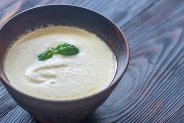

Alfredo Sauce

Description
This a simple, yet elegant dish that can be served for date night,special events, or simply used as an appetizer any day of the week!
Ingredients
- 1/4 cup unsalted butter
- 1 tbsp minced garlic cloves
- 1 cup heavy whipping cream
- 1/2 cup freshly grated Romano cheese divided
- fresh ground black pepper
Steps
- In a small saucepan, melt butter on medium heat.
- Add minced garlic and allow to sautee about a minute
to a minute and a half, till just starting to brown.
- Pour heavy whipping cream into the garlic butter and stir gently with a whisk or spoon (I prefer a whisk)
- When cream starts boiling, quickly lower the heat while whisking so it doesn't bubble over and slowly add 1/4 cup of grated cheese
- Add as much or as little pepper as you like
When using good quality, aged Pecorino Romano cheese, I've
found it has way more flavor and naturally salts the alfredo
without needing any extra. If you feel it needs salt, however,
USE SPARINGLY! Add a dash at a time and taste
after stirring well before adding more. I do like to increase the amount of
cheese though, and will put 1/2 cup or more into it.